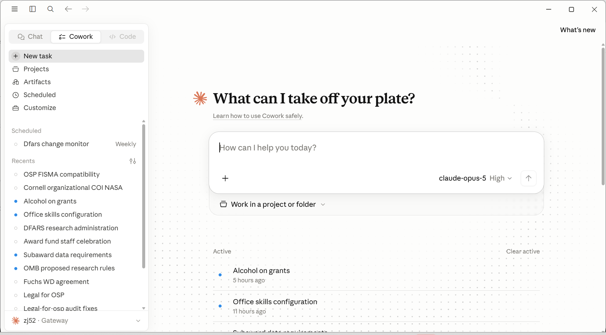
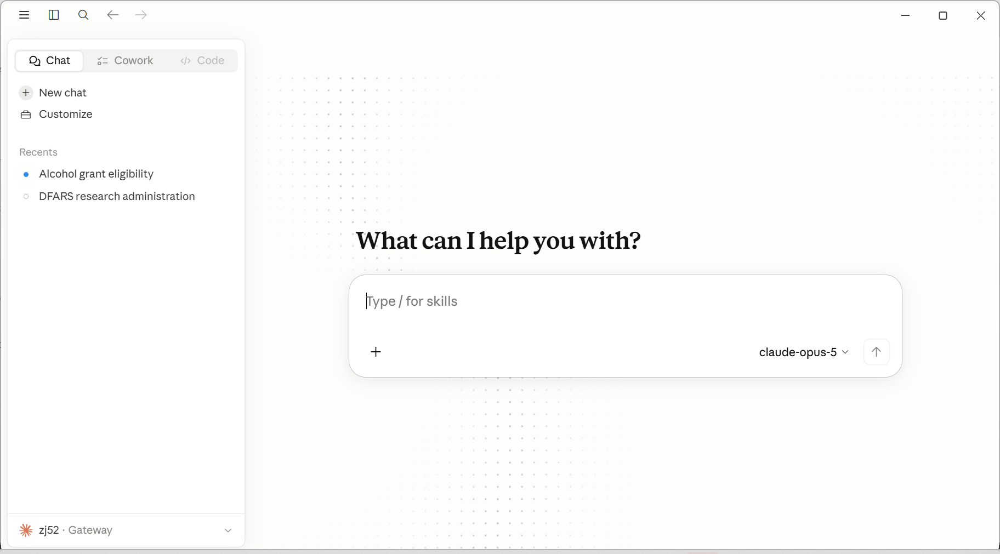
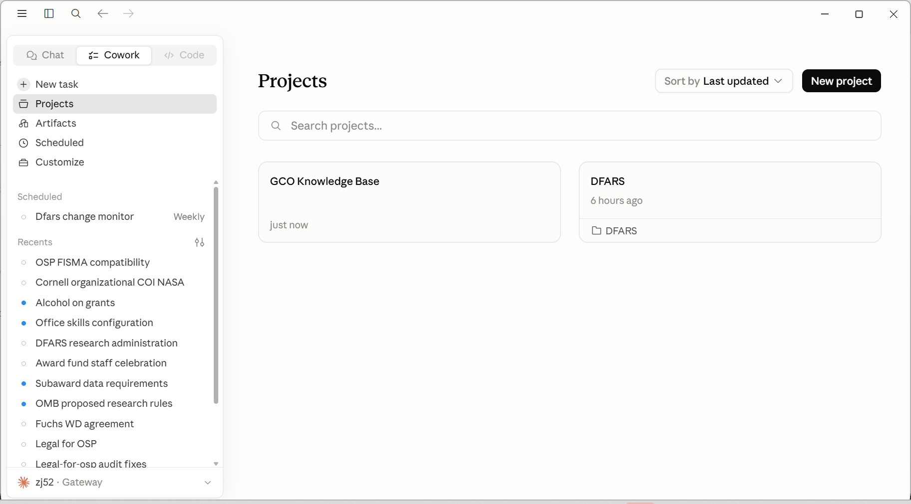
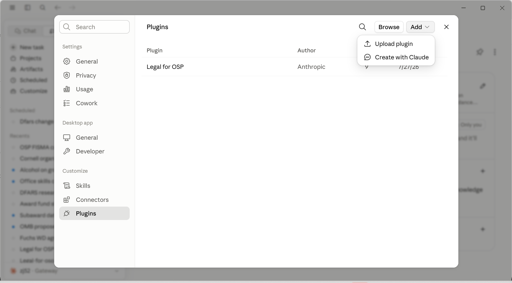

It fills up
Long documents and long chats compete for the same room. A fresh chat for a fresh task isn’t a workaround; it’s the right habit.

Module 1 · Claude Training at Cornell
Set up to use models in our secure AI infrastructure:

* Anthropic calls this configuration “Claude Desktop with third-party (3P) inference,” or Claude 3P for short. You’ll see that name in these materials; it’s the same tool.
Speaker notes
UI Quick Reference · Claude 3P
Cowork is where you ask Claude to do something for you. It works on real files and hands back finished work.

1 2 3 4 5 6 7Chat is where you ask questions. Nothing here reads or writes your files.

1 2 3 4 5 6 7A project bundles instructions and reference files, so every chat or task inside it starts with the right context loaded.

1 2 3 4 5 6Plugins bundle skills for a role. The Legal for OSP plugin is what the contract review runs on.

1 2 3 4 5